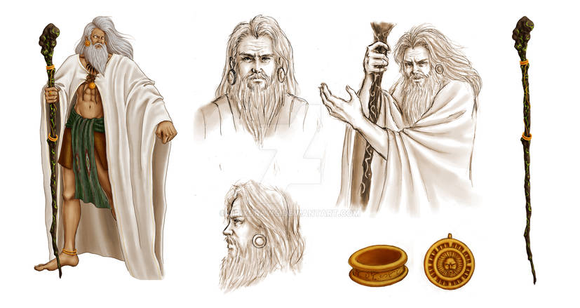
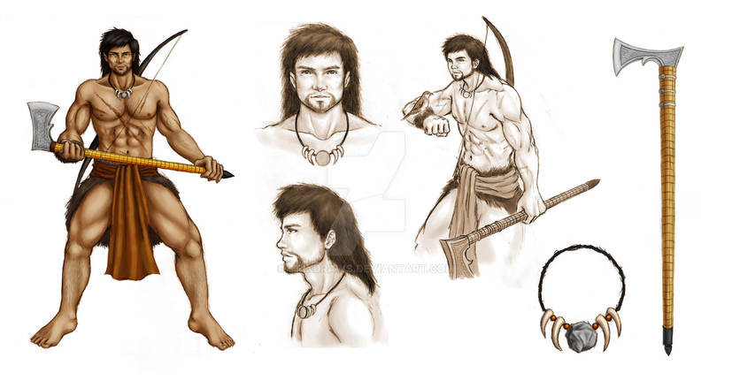
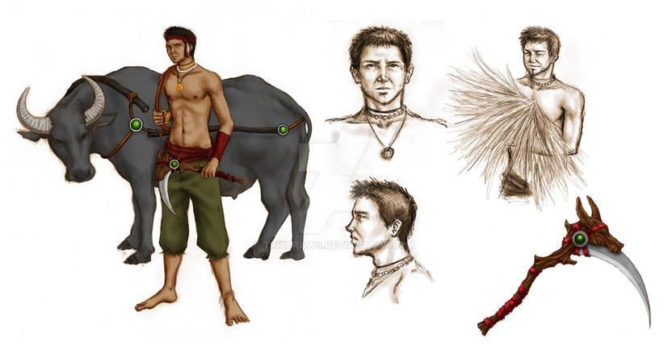
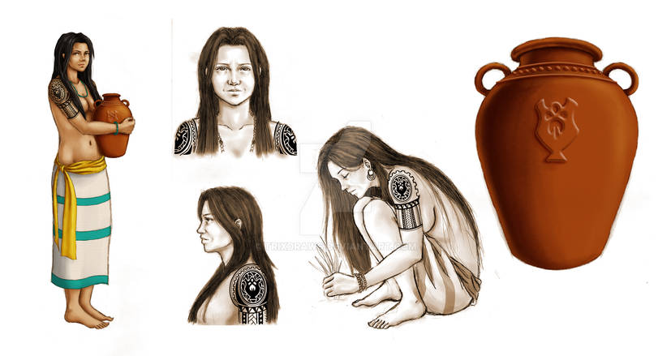
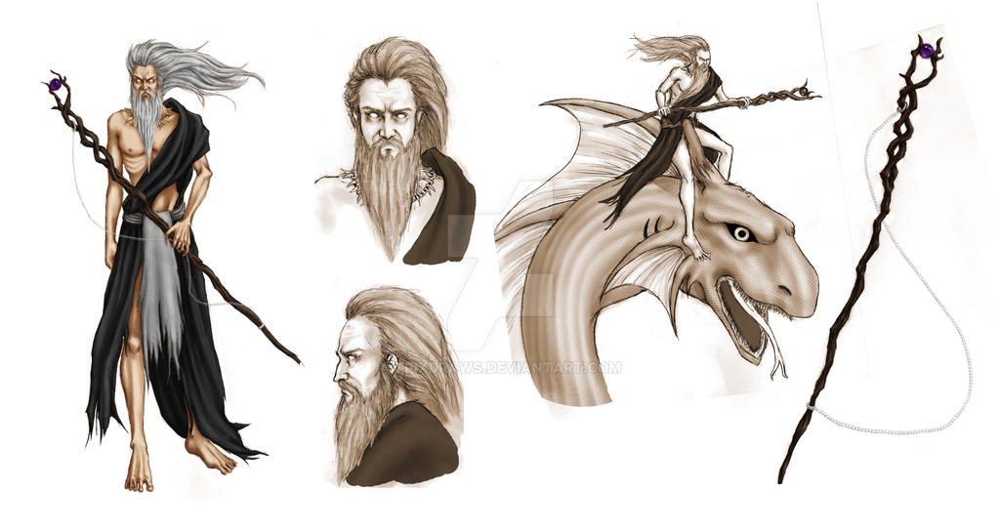

Meet the gods and godesses
Bathala: The Supreme god
Bathala is considered the highest-ranking deity in the Tagalog pantheon. Revered as the creator of the universe, Bathala is often depicted as an all-powerful, yet benevolent god who watches over the world and its inhabitants.
Dumakulem: The Guardian of the Mountains
Dumakulem is known as the fierce guardian of the mountains. As the son of Bathala, he is often portrayed as a mighty and protective figure who safeguards the forests and all creatures within them.
Dumangan: The god of Good Harvest
Dumangan is the god who ensures a bountiful harvest. Farmers pray to Dumangan for good weather, fertile soil, and abundant crops. He is celebrated during planting and harvest seasons for his generosity.
Ikapati: The Goddess of Fertility
Ikapati is revered as the goddess of fertility and agriculture. She is often depicted as nurturing and caring, bringing life to the land and ensuring the prosperity of the people. Her blessings are sought for fruitful harvests and healthy children.
Sitan: The god of the Afterlife
Sitan is the ruler of the underworld and the keeper of souls. Known as a complex deity, he oversees the realm of the dead and ensures that the spirits find their rightful place. Sitan is both feared and respected for his power over life and death.